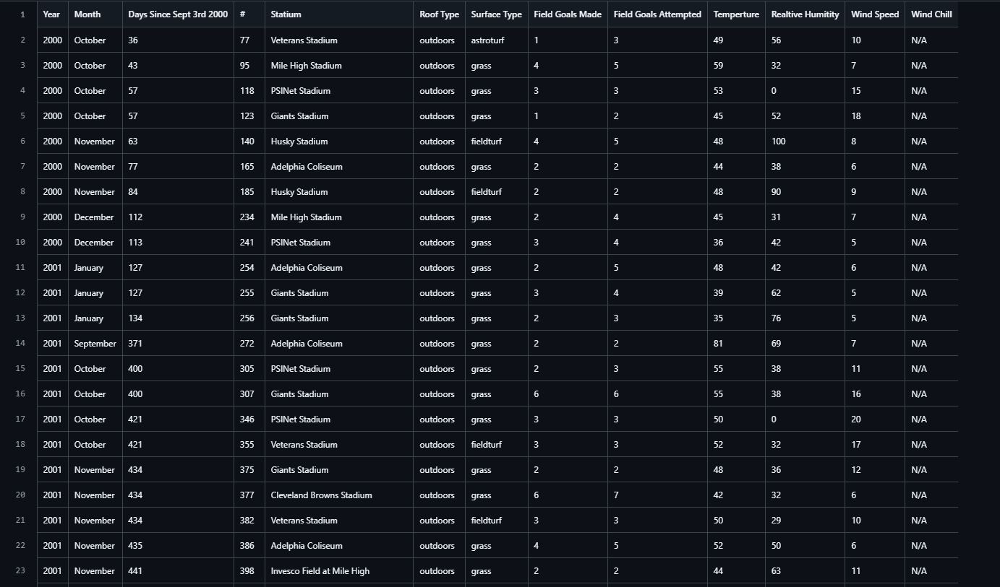
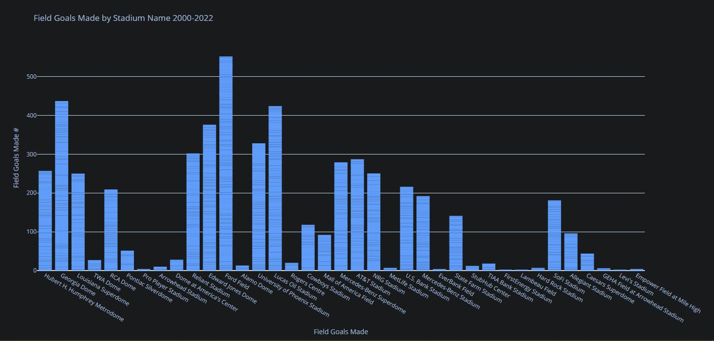

NFL Point Kicker Data Scraper
A sophisticated Python-based web scraping toolkit that extracts and processes NFL kicking statistics from Pro-Football-Reference, focusing on field goal attempts and environmental conditions.
Technologies Used
Python
BeautifulSoup4
CSV
Web Scraping
Features
- Comprehensive Data Collection: Gathers stadium info, roof type, playing surface, and weather conditions
- Intelligent Processing: Rate limiting, incremental saving, and error recovery systems
- Multiple Output Formats: Specialized CSV files for various analysis scenarios
- Environmental Analysis: Detailed weather and facility condition tracking
Project Overview

CSV Output View of the Data

Statistical Analysis and Data Visualization of the Data
Implementation
Processing Pipeline
1. FootballInfoScraper.py → Initialize and collect URLs
2. FootballGameInfoScraper.py → Extract game data
3. GameUrlDateSeparator.py → Process game dates
4. DateToCSVFormat.py → Standardize formats
5. TotalDataFormatting.py → Create master dataset
6. SplitDataFormatting.py → Generate analysis filesOutput Files
- Complete dataset (2000-2022)
- Weather-specific analysis
- Dome-specific analysis
- Wind chill impact analysis
Technical Highlights
Data Fields Collected
- Game dates and locations
- Stadium characteristics
- Environmental conditions
- Kicking performance metrics
Key Features
- Automated rate limiting to prevent IP bans
- Incremental data saving for reliability
- Comprehensive error handling
- Multiple analysis-ready output formats
Resources
 GitHub Repository
GitHub Repository
License
This project is licensed under the MIT License. See the LICENSE file for details.